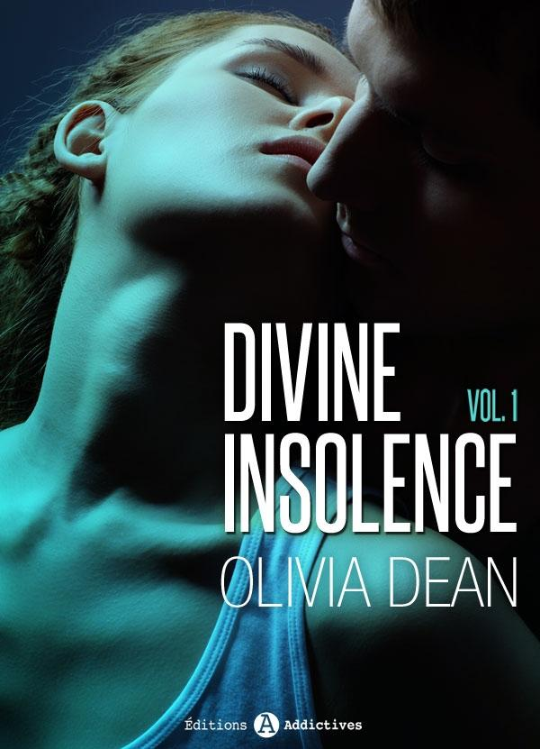

Rejoignez les Editions Addictives sur les réseaux sociaux et tenez-vous au courant des sorties et des dernières nouveautés !
Facebook : cliquez-ici
Twitter : @ed_addictives
Egalement disponible :
Sexy comédie - Recherche fausse fiancée, 1
Quand Ivy Clemens, jeune comédienne de stand-up, indépendante et sûre d’elle, répond à l’annonce n° 345856, elle n’imagine pas qu’elle s’apprête à jouer le rôle de sa vie… Et quel rôle ! Engagée par Simon Stone pour incarner sa fiancée lors d’une fête de famille, Ivy doit renoncer à ce qu’elle est. D’artiste fauchée, elle devient la riche héritière d’une famille de diamantaires.
La jeune femme se lance avec curiosité dans ce défi pour le moins surprenant et terriblement attractif. Mais perdue entre fiction et réalité, elle sera bien vite déstabilisée par un partenaire aussi troublant qu’énigmatique.
Egalement disponible :
Divine insolence
La journée avait pourtant bien commencé !
Romane, jeune assistante d’édition, a réussi à obtenir un rendez-vous avec une personnalité incontournable.
Mais très vite rien ne va plus : au bout d’une heure d’entretien, elle réalise que « la personnalité incontournable » l’a confondue avec quelqu’un d’autre, et quand elle s’enfuit, morte de honte, elle se retrouve coincée, seule, dans l’ascenseur. Ne lui reste plus qu’à respirer profondément en attendant qu’un héros super-sexy la délivre.
Là, elle rêve, les mecs, ça fait longtemps qu’elle a fait une croix dessus…
Et pourtant…
Tapotez pour voir un extrait gratuit.

Tessa Bergen
SÉDUCTION & TENTATION :
NORAH ET LUCILLA
Volume 1
1. Fashion victime
– Norah, c’est ça ?
Je sursaute et lève les yeux de mon ordinateur, surprise.
– Je n’ai pas encore eu l’occasion de me présenter. Lucilla Conti.
La femme qui s’adresse à moi est d’une beauté à couper le souffle. Son teint hâlé souligne des traits fins, sculptés, et illumine la ligne perçante de ses yeux verts, tandis que d’épaisses boucles brunes retombent sur ses épaules avec une grâce faussement négligée. Je sais qui elle est. Même sans l’avoir approchée, tout le monde ici sait qui elle est.
– Marie m’a parlé de vous. À vrai dire, elle s’est montrée très satisfaite de votre travail ces derniers temps. Depuis quand êtes-vous chez nous ? Trois semaines ?
J’opine silencieusement. Mon cœur bat à tout rompre.
– J’ai lu votre commentaire pour le dernier défilé Lanvin, ainsi que votre article événementiel. Vous avez une plume, c’est indéniable. Votre manière d’approcher les choses est intéressante, originale. J’aimerais que vous vous chargiez de la page édito du prochain numéro. Marie vous donnera la charte précise et les détails, mais il me la faut pour lundi.
– Oui, bien sûr. C’est entendu. Je vous remercie beaucoup de me donner cette chance…
– Bien. Bon courage.
Elle me sourit et s’éloigne aussitôt, ses talons hauts claquant sur le sol. Je reste quelques instants à retrouver mes esprits, comme hébétée.
Mon Dieu, c’est incroyable… Lucilla Conti venue en personne me féliciter !
Depuis le début de mon stage, je n’ai fait qu’apercevoir de loin la célèbre PDG, réputée inaccessible. Marie, la directrice de rédaction, a toujours pris directement en charge ma formation en me transmettant les ordres. Bien entendu, dans un journal aussi prestigieux que Fashionable, les stagiaires sont les derniers à rencontrer cette prêtresse du grand luxe et de la mode.
On m’en a parlé, j’ai vu sa photo à plusieurs reprises et je l’ai croisée quelques fois au détour d’un couloir, mais jamais je ne l’aurais imaginée si gracieuse, dotée d’une telle prestance. Autour d’elle, l’air est comme suspendu. Elle déploie une assurance incroyable, comme si le monde lui appartenait…
Allez au travail, Norah, ressaisis-toi ! Ce n’est pas le moment de te reposer sur tes lauriers…
Pourtant, je n’arrive pas à chasser l’entrevue de mon esprit. Enfin Simon, l’assistant web avec qui je partage le bureau, m’arrache à mes pensées.
– Dis donc, tu lui as fait de l’effet ! N’en profite pas pour prendre la grosse tête, hein ?
– C’est bon, Simon.
Je bredouille, mais ma confusion est encore palpable.
– Et puis il va falloir que tu assures, parce que si tu te plantes sur l’édito…
– Ça va, Simon !
La fermeté de mon ton le fait brusquement taire.
Mais qu’est-ce qui me prend ? Il est juste jaloux… Pas de quoi s’énerver. Il faut vraiment que je me calme…
***
Quand Marie me convoque dans son bureau, quelques minutes plus tard, j’essaye de retrouver toute ma contenance.
– Norah, j’ai vu Lucilla. C’est bien que tu te charges de la page édito de septembre. Il faudrait que tu orientes ta chronique du côté de la Fashion Week de New York, en évoquant entre autres son rôle ambassadeur. Peut-être avec un débrief sur Ralph Lauren. Je te laisse regarder. Quelque chose qui cogne par rapport à la saison dernière, de mille signes environ. Je t’envoie par mail les résumés qu’on ajoutera en fin de page et le sommaire. C’est bon pour toi ?
– Oui, bien sûr. C’est noté. Je te le remets lundi ?
– Non. Lucilla l’attend lundi. Envoie-le-lui directement.
– OK.
Je tente de sourire, mais mon visage reste figé par l’appréhension.
Simon a raison ; il va falloir que j’assure, je n’ai pas le droit à l’erreur.
– Viens me voir en cas de doute. Tu peux bien évidemment t’inspirer des numéros des années précédentes. Je te conseille de laisser reposer ce soir, tu pourras te pencher dessus demain…
– D’accord Marie, je te remercie. Bonne soirée.
***
En quittant le boulevard Haussmann pour rejoindre le quartier de Belleville, je me laisse bercer par le brouhaha parisien. Les gens commencent à affluer aux terrasses des cafés pour profiter de la douceur du soir. L’air tiède sur mon visage calme un peu mes nerfs et me donne l’impression d’être en sécurité sous l’aura bienveillante de la capitale. Quand je pénètre dans mon petit studio jonché de cartons, Rémi m’attend déjà.
Il se précipite pour m’embrasser et semble heureux de me voir. Depuis notre emménagement, je ne me suis pas encore habituée à sa présence quotidienne, moi qui ai toujours tenu à mon indépendance ; mais ce soir, le retrouver m’apaise.
– Ça va. On m’a donné une tâche importante aujourd’hui. Ils me chargent de rédiger l'édito du prochain numéro.
– Super ! C’est une bonne chose, ils reconnaissent tes compétences.
Je souris. Rémi a toujours encouragé mes projets ; c’est lui qui m’a poussée à postuler pour divers journaux plus prestigieux les uns que les autres, dont Fashionable, et qui n’a jamais cessé de défendre mes talents d’écriture.
– Oui, mais c’est assez stressant. Je dois vite trouver un sujet et rédiger l’article avant lundi, alors que tu connais mes limites en matière de mode !
– Ne panique pas, tu as le temps de te documenter en quatre jours.
– En tout cas, tu ne devineras jamais qui est venu me l’annoncer en personne… Lucilla Conti !
– Qui ? demande-t-il négligemment en décapsulant deux bières.
– Conti… Ça ne te dit rien ?
– Oh ! Attends… la big boss ? Quel honneur ! Elle s’occupe des stagiaires maintenant ?
– Je crois qu’elle s’occupe un peu de tout… Tu sais, Marie doit lui faire valider chaque détail avant de lancer l’impression.
– Et elle est aussi belle en vrai qu’en photo ?
– Oui… Je crois…
Sa question me met étrangement mal à l’aise. Je repense au sourire de Lucilla, à l’intensité de son regard à peine rehaussé d'un léger trait de crayon, à la finesse de son cou.
Elle est belle, oui, bien sûr, splendide même. Mais je n’ai pas envie que tu le saches. Peut-être suis-je jalouse de savoir que tu la trouverais plus belle que moi ?
Brusquement irritée par la conversation, je préfère changer de sujet.
– Et toi ? Tu as pu travailler ?
– J’ai ouvert le livre de civilisation, mais j’ai abdiqué pour la linguistique. J’ai surtout potassé les annales du concours. J’ai aussi fait les courses. Par contre, je n’ai toujours pas réussi à mettre la main sur le mixeur. À ce propos, il serait sans doute pas mal de finir de déballer les cartons ce week-end, non ?
Ma bière à la main, j’approuve négligemment en me laissant tomber sur le canapé. La moitié de mes cartons est encore entassée le long du mur, envahissant notre espace de vie jusqu’à la salle de bain. Il serait effectivement temps que je m’y mette, et pourtant le courage finit toujours par me manquer au moment de me replonger dans ce fatras indéfini de bibelots et de souvenirs en tout genre qui résume les vingt-et-une années de ma vie. Les affaires de Rémi ont, elles, déjà presque toutes trouvé leur place sur les étagères et dans les placards. Il a toujours été plus ordonné que moi. Mais je ne souhaite pas le contrarier.
– Oui, t'as raison, on finira dimanche.
– Tu veux commander chinois ce soir ?
– Si tu veux, oui… Tu veux bien t’en occuper ? Je vais prendre une douche en attendant. Je suis rentrée à pied et je suis en nage.
Quelques instants plus tard, accroupie dans la baignoire, je me laisse aller sous le flot abondant de la douchette. L’eau froide sur mon corps, mêlée aux effluves vanillés du savon, me donne l’impression de faire peau neuve. Depuis que je partage l’appartement avec Rémi, ces moments de solitude me sont devenus d’autant plus précieux, et j’en profite pour laisser mon esprit vagabonder. Je passe ainsi des cartons qu’il me reste à défaire à l’article qui m’attend demain.
Il me faut un angle d’attaque novateur. Et moi qui ignorais tout de la Fashion Week il y a encore deux semaines ! Comment faire pour ne pas passer pour une amatrice et me ridiculiser auprès de Lucilla Conti ?!
Malgré moi, mon cœur s’accélère de nouveau. Je suis entrée dans le milieu de la mode par hasard, alors que je cherchais une première expérience de chroniqueuse pour finir mes études journalistiques. Et maintenant que la célébrissime Lucilla a posé ses yeux sur moi, je suis terrorisée à l’idée de ne pas être à la hauteur.
La voix de Rémi à travers la porte interrompt mes réflexions.
– Chérie, je ne t’ai pas dit, ma mère a appelé. Elle voulait savoir si tu viendrais le 26, à l’anniversaire de mon oncle. J’ai dit oui. Ça ne t’embête pas ?
– Non, non, réponds-je après un temps.
Puisqu’on me demande mon avis…
– Tant mieux, elle est ravie. Elle fera des côtelettes.
Sous le jet, je serre les poings et j’ouvre la bouche jusqu’à ce qu’elle soit remplie d’eau. La famille de Rémi s’est montrée très affectueuse avec moi dès le début de notre relation, à l’époque où nous n’étions encore que des lycéens. Mais j’en viens parfois à me demander s’ils ne sont pas trop présents dans la vie de leur fils, et… dans la mienne. Sur le plan familial, ma mère à moi me suffit amplement ! Mais je sais qu’ils comptent sur moi et je ne souhaite pas décevoir Rémi en lui faisant faux bond.
Quand je sors enfin de la salle de bain, ruisselante, enrubannée d’une serviette, ses bras viennent soudain m’enlacer par-derrière.
– Le traiteur arrive dans trente minutes, me glisse-t-il à l’oreille d’une voix douce.
– C’est bien, confirmé-je, feignant de ne pas comprendre ses intentions.
Il longe mon épaule nue du bout du doigt.
– Tu sens bon la vanille, me chuchote-t-il en m’embrassant dans le cou. Ça me donne envie de toi.
Je sens son sexe durcir contre mes reins et sa main chercher mes cuisses humides. Riant à demi, chatouillée par sa barbe, je finis par me laisser entraîner sur le canapé.
2. Perturbations atmosphériques
– Décidément, je ne t’ai jamais vue aussi concentrée… Tu en oublies même le téléphone !
La réflexion de Simon me fait lever le nez et je réalise que le combiné sonne effectivement depuis une dizaine de secondes sans que je m’en sois aperçue, trop occupée par la montagne de mails qu’il me reste à traiter. Alors que je décroche en grommelant une excuse, la voix de Lucilla résonne.
– Norah, s’il vous plaît, venez me voir une seconde.
Je reste pétrifiée.
Que veut-elle ? Si elle me demande l’édito maintenant, je suis cuite. On est vendredi soir et je n’ai eu le temps de rien.
Je toque à la porte de son bureau, c'est la première fois que j'entre dans son royaume ! Derrière la porte entrouverte, je découvre une pièce à la fois spacieuse et sobre, majestueusement éclairée par une baie vitrée qui domine tout Paris. Lucilla semble ne pas m'avoir entendue, absorbée par des documents, elle ne se redresse pas tout de suite. Ses cheveux ramenés sur le côté en un chignon torsadé, d’où s’échappent quelques boucles rebelles, soulignent la grâce de son visage.
Cette femme a tout, pensé-je. Quoi ou qui pourrait lui résister ?
Des yeux, je suis la ligne de ses lèvres et la courbure infinie de ses cils, quand elle relève soudain la tête, croisant mon regard.
– Asseyez-vous, dit-elle en désignant le fauteuil qui lui fait face.
Je m’exécute en un sourire docile.
– Peut-être Marie vous en a-t-elle déjà parlé : une interview est prévue avec Lucy Hoffman mercredi. Sans compter qu’elle est la nouvelle égérie Dior, elle est aussi une grande amie, raison pour laquelle elle nous fait la faveur de l’exclusivité. Nous lui accorderons quatre pages en septembre. Cet entretien est un gros challenge.
À chacun de ses mouvements, les diamants à ses oreilles se mettent à scintiller. Les arômes envoûtants de son parfum m’enrobent et me pénètrent par vagues tièdes.
– J’aimerais que vous vous en occupiez.
– Moi ?! m’exclamé-je, arrachée à ma torpeur.
– Oui. J’ai envie de vous tester sur le terrain. En plus, mes chroniqueuses seront toutes éparpillées entre New York, Rome et Londres la semaine prochaine. Cela vous pose-t-il un problème ?
Je bredouille, confuse.
– Non, enfin… C’est que je n’ai pas encore fait mes preuves…
– Eh bien, c’est le moment. C’est à 15 heures. Je vous enverrai les détails en début de semaine. C’est entendu ?
– Bien sûr, oui ! C’est formidable. Je vous remercie beaucoup.
Je rentre chez moi encore sonnée par la nouvelle. J’ai brusquement l’impression que les opportunités se précipitent, attisant en moi autant d’excitation que d’angoisse, et le sentiment inconfortable de devoir me jeter dans le vide.
***
Le week-end passe à une vitesse folle. Quand nous ne sommes pas le nez dans les placards, à trier et déballer, je passe mon temps à glaner sur Internet des informations concernant la Fashion Week à venir, ou à décortiquer les pages édito des précédents numéros de Fashionable. Mais l’effort finit par payer ; lorsque le dimanche soir arrive, mon article est écrit et il ne reste plus que trois cartons à ouvrir.
– Regarde, un album photos ! s’écrie Rémi en dégageant un épais volume de mon bric-à-brac. C’est drôle, je ne t’ai jamais vue enfant.
– L’album était dans la chambre de ma mère, avoué-je, je l’ai récupéré en partant. Fais voir !
Déjà, il feuillette les pages. Je les regarde de loin avec amusement, sans nostalgie. Sur les premiers clichés, mon père apparaît ponctuellement, mais j’ai gardé un si faible souvenir de son visage que ces portraits de famille me paraissent presque étrangers.
– Et qui est cet homme ? demande Rémi en me tendant l’album.
– Qui ?
– Là, ici avec toi, là avec ta mère, et là encore.
Je scrute le visage qu’il pointe du doigt. Effectivement, un homme brun, reconnaissable par sa moustache et son chapeau, figure sur les photos à plusieurs reprises, jusqu’à mes cinq ou six ans, avant de disparaître totalement de l’album.
– C’est bizarre, dis-je à mi-voix. Je n’en ai aucune idée. Je ne me souviens pas de lui. Un ami de ma mère peut-être ?
Je prononce cela sans conviction. Non seulement je connais tous les amis de ma mère, pour avoir été au centre de sa vie pendant vingt-et-un ans, mais en plus l’homme à la moustache semble très intime avec nous, tenant ma mère par l’épaule ou me portant sur ses genoux.
Si ce n’est un proche de la famille, se pourrait-il que ma mère ait eu un amant ?
Cette seule idée me glace le sang.
– Je demanderai à ma mère, dis-je à Rémi en essayant de paraître la plus désinvolte possible, malgré les doutes que je sens s’infiltrer en moi. Bon, ce n’est pas tout ça, mais on avance ? Il faut venir à bout de ce bazar…
À ces mots, je lui saisis l’album des mains pour aller le ranger au fond de la commode de l’entrée. Mais je sens que le mal est fait. Comme si un inconnu à moustache avait brutalement passé le pas de ma porte pour s’immiscer dans la part la plus intime de mon existence…
***
Après avoir envoyé mon article à Lucilla dès mon arrivée au bureau, je passe mon lundi entier les yeux rivés à mon ordinateur et mon téléphone, dans l’attente de sa réaction… mais rien. Ni mail ni appel.
Est-ce que cela veut dire que je lui ai déplu ? Que le texte ne convient pas ? Mon dieu, elle a dû me trouver stupide, et maintenant elle doit se demander comment me décharger de l’interview de mercredi !
Affligée, je reste incapable de me concentrer, jetant nerveusement des coups d’œil dans le couloir afin de guetter les éventuels passages de la PDG. Mardi, je suis toujours sans nouvelles. En fin de matinée, alors que Marie revoit avec moi la maquette du prochain numéro, je finis par prendre le risque de lui demander :
– Lucilla ne t’a pas dit ce qu’elle avait pensé de mon texte pour la page édito ?… Elle ne m’a pas fait de retour et je ne sais pas trop…
– Oh, ne t’inquiète pas ! Elle doit avoir mille autres choses à faire, s’esclaffe-t-elle d’un air rassurant. Ne te mets pas martel en tête.
Martel ou pas martel, ses paroles ne réussissent pas à me soulager, néanmoins je lui suis reconnaissante pour sa tentative et la remercie d’un sourire. Marie est une femme douce, bienveillante, avec qui travailler est toujours un plaisir. Je ne lui ai jamais vu de saute d’humeur et elle sait affirmer les choses sereinement, sans passion ni colère.
Je sors de son bureau et me retrouve nez à nez avec Lucilla, qui ne me jette pas un regard.
– Bonjour, dis-je timidement.
– Bonjour Norah.
Sa réponse claque, distante, et Lucilla me dépasse sans un mot de plus, avant même que j’aie eu le temps de lui demander quoi que ce soit. Sa froideur me déconcerte.
Qu’ai-je donc fait pour tant lui déplaire ?
Je m’apprête à capituler quand, dans l’après-midi, elle me fait venir dans son bureau.
– Norah ! s’exclame-t-elle à mon entrée. Votre article est parfait. J’ai juste retouché deux ou trois adverbes, mais vous avez tout à fait compris ce que je voulais et on le garde tel quel.
– C’est vrai ? Je croyais que vous… Enfin que ça ne…
– Fais-toi un peu confiance ! Et demain, Lucy t’attend. Sois bien à l’heure.
J’acquiesce et m’apprête à quitter son bureau, mais sa voix me rappelle, m’obligeant à faire volte-face. Lucilla est debout, à un pas de moi. Plus grande que moi d’une demi-tête. Son corps, soudain si près du mien, m’émeut étrangement.
– Norah, dit-elle doucement. Tout le monde se tutoie ici. Je crois qu'on devrait en faire autant, non ? Et puis, on travaille ensemble.
Son souffle sur ma peau, mêlé à son parfum, m’envahit de frissons. Je me sens tout à coup tétanisée, vidée de toute volonté.
– D’accord, finis-je par articuler avant de prendre la fuite, chancelante.
Il faut que je me ressaisisse. Lucilla m’impressionne trop. Elle me rend vulnérable et nerveuse…
Le reste de la journée, un peu égarée par toutes les émotions, j’essaye de me concentrer pour ne plus penser à rien d’autre qu’à l’interview de demain. Et je rentre chez moi le cœur battant.
***
Lucy Hoffman a deux ans de plus que moi à peine, et une fortune que je n’aurai jamais. Élancée, élégante et lumineuse, elle me reçoit avec autant d’art que d’aisance au milieu de ses meubles Louis XVI, et répond à mes questions avec un naturel désarmant. Je ne peux m’empêcher de l’envier. Tout semble si facile chez elle, si accessible et évident. À mesure qu’elle me confie sa destinée extraordinaire, je me détends.
– Tu es électrique, en ce moment ! n’a pas manqué de me reprocher Rémi au réveil.
Il a raison, je suis sur les nerfs. J’espère profiter de notre week-end à Angers, chez ses parents, pour souffler un peu.
Lorsque Lucy conclut l’interview, j’ai seize pages de notes qui retracent la majorité de son parcours, jusqu’à sa montée des marches chez Dior. Nous nous saluons chaleureusement, non sans que le top model me fasse auparavant promettre de venir passer quelques jours dans sa villa du Cap Ferret le mois prochain. Je suis sur un nuage… même si je sais que les invitations dans ce milieu sont souvent des phrases lancées en l'air ! Mais ça me fait tellement plaisir !
– Tu te rends compte ? dis-je à Rémi quelques heures plus tard. Une maison à elle avec piscine privée en bord de mer. Cette fille a tout ! Tu verrais son appartement de Sèvres-Babylone… Et quand on pense qu’elle a été repérée à quinze ans alors qu’elle se fichait pas mal de la mode ! Remarque, c’est vrai qu’elle est superbe… Dis, tu m’écoutes ?
– Excuse-moi, me répond-il affalé sur le canapé, paupières mi-closes. J’ai révisé toute la journée aujourd’hui. Et j’ai été voir cette conférence sur les concours, démoralisant au possible. C’est à peine s’ils ne nous déconseillaient pas d’enseigner.
– Je suis désolée chéri…
– Peut-être que je ferais mieux d’aller tout de suite chercher à me titulariser en Angleterre. Un ami m’a mis en contact avec un de ses anciens profs d’Oxford. Je commence à envisager notre installation…
Je me redresse violemment du canapé.
– Oxford ? De quoi tu parles ?!
– C’est juste pour ne rien exclure. Il vaut mieux envisager toutes les hypothèses… Après tout, j’aurais probablement mille fois plus de chance de faire carrière là-bas qu’ici.
– Mais sans m’en parler ? Alors que nous venons à peine d’emménager ?
– Norah, je cherche juste à n’écarter aucun scénario possible, c’est tout. Rien n’est fait, rassure-toi. Au fait, tu as eu ta mère pour les photos ?
– Non, je n’ai pas eu ma mère, lancé-je avant de m’enfermer dans la salle de bain, furieuse.
Mais comment peut-il déjà penser à tout plaquer sans même me demander mon avis ?!
L’eau étouffe peu à peu ma rage. Je déteste les confrontations. Après tout, ne serais-je pas prête à le suivre n’importe où ? Je ne sais pas vraiment… La vie avec Rémi est facile, en quelque sorte évidente, mais c’est comme si plus rien de surprenant ne pouvait m’arriver. Comme si tout était tracé d’avance.
Finalement, c’est peut-être moi qui ai un problème. J’aurais dû le soutenir davantage. Je n’ai pas été très disponible ces derniers temps. Mais j’aime mon boulot. L’interview a été grisante. Lucilla me bouscule, elle déclenche des choses nouvelles en moi. Et je ne veux pas que ça s’arrête…
3. Amuse-bouche
Les doigts de Lucilla s’approchent de ma joue pour descendre délicatement la courbe de mon cou, jusqu’à l’épaule. Je retiens ma respiration. Sa caresse est fugace et ardente, propageant sa chaleur jusqu'à mon ventre. Nous ne parlons plus ; son regard émeraude me fixe et s’ancre au fond de moi. À travers son bustier blanc, son sein se soulève à un rythme saccadé. Je suis comme anesthésiée.
Je n’ai rien vu venir. Deux secondes plus tôt, elle me félicitait de mon interview, puis a approché doucement sa main de mon visage.
Et maintenant ? Cette situation est complètement déplacée, pourquoi suis-je incapable de stopper son geste ?
Je finis par m’extirper de ma stupeur et recule d’un pas, les joues en feu.
– Tu es surprenante, murmure Lucilla avec naturel, souriante, avant de retourner s’asseoir à son bureau et de plonger dans ses papiers, comme si de rien n’était.
Je pars sans un mot et traverse le couloir à la hâte, pour rassembler mes affaires, sous les yeux ahuris de Simon.
– Tu vas où ? Ce n’est pas encore l’heure…
– Je rentre, je suis malade.
Et je claque la porte derrière moi. Sur le chemin, le sang continue de me cogner violemment les tempes. Je me remémore la scène en boucle, le regard de Lucilla, sa main le long de mon cou nu. Sa douceur. Les frissons.
Ce n’est pas bien, ce n’est pas bien, je me répète en boucle. Alors qu’aurais-je dû faire ? Repousser son bras ?... Et que voulait-elle dire par « surprenante » ? Je ne sais même pas si c’est un compliment ou une critique !
Je ferme les yeux en marchant, mais les images sont encore plus vives. Son parfum me colle à la peau.
Rémi s’étonne de me voir rentrer si tôt ; je prétexte une angine sans même réfléchir. La vérité, c’est que je ne rêve que d’une chose : être seule. L’excuse fonctionne et, bien qu’il cache mal sa déception, Rémi part chez ses parents sans moi pour le week-end.
Je voudrais me distraire. Oublier ma fureur, ne plus penser à ma gêne ni appréhender mon prochain face-à-face avec Lucilla. Je voudrais qu’on me dise que tout cela est banal dans le milieu de la mode, sans ambiguïté. Et pourtant je refuse de penser que ça n’a aucune importance. L’émotion en moi est trop forte.
Le lendemain, Clémentine, ma copine de toujours, me rejoint pour un verre. Je brûle de lui demander conseil, mais je me défile avant de lui raconter la scène, de peur de paraître bizarre ou ridicule.
Après tout, peut-être est-ce moi qui ai quelque chose d’anormal à me troubler pour un événement aussi anodin…
Entre deux gorgées de cosmopolitan, Clémentine raconte sa vie, comme à son habitude, avec entrain et légèreté : sa colocation dans le Quartier Latin, son copain, ses études d’archéologie. En sa compagnie, j’ai enfin le sentiment de retrouver un semblant de paix intérieure.
Le soir même, je décide de profiter d’être seule pour appeler ma mère. Mais à peine ai-je mentionné les photos de famille que je la sens se braquer à l’autre bout du fil.
– De quoi tu parles Norah ?
– Je te jure, maman, cet homme revient sur plusieurs photos et il semble très proche de nous. Pourtant, je n’ai aucun souvenir de lui…
– Je ne vois pas… Ça devait être un ami de ton père.
– Mais non, réfléchis… Avec des moustaches et un chapeau !
– Écoute, je n'en sais rien ! On regardera quand je passerai vous voir ! Raconte-moi plutôt ton stage !
– Mon stage se passe très bien, maman.
Et la conversation continue comme si je n'avais jamais abordé l'homme à la moustache... Bizarre que ma mère porte si peu d'attention à ce détail. Je lui poserai la question quand elle sera plus disposée à m'en parler ! Là, visiblement, ça la dérange !
Est-ce que ma chère maman me cacherait quelque chose de son passé ? de notre passé ? Plus que l’adultère, la simple idée qu’il puisse y avoir un éventuel secret de famille me remplit d’effroi.
***
Rémi rentre d’Angers hâlé et détendu. Je le dévisage sur le pas de la porte, grand, châtain, avec son nez grec et ses larges épaules. Il m’a tout de suite plu au lycée. Pourtant, j’ai attendu six mois qu’il vienne m’adresser la parole. Il a été mon premier copain, et aujourd’hui, il est mon équilibre. Même si mon quotidien me semble monotone, je ne sais pas envisager mon avenir sans lui.
Aussitôt dans le salon, il se jette sur moi et me plaque sur le canapé. Sa langue me cherche, ses mains avides s’emparant de mes seins sous mon tee-shirt.
– Tu m’as manqué, chuchote-t-il dans mes cheveux, tout en m’ôtant mon soutien-gorge.
Je frémis au contact de son sexe durci contre moi. Nous nous déshabillons frénétiquement et je l’attire à moi, saisissant sa taille entre mes jambes. Lui, à genoux devant moi, me soulève les reins pour me faire aller et venir sur son membre gonflé. Il me prend lentement d’abord, puis de plus en plus fermement, de plus en plus fort, tandis que je sens en moi son sexe grandir encore, devenir énorme, jusqu’à me remplir entièrement. Je me cabre et commence à gémir sous les chocs répétés. Son petit doigt va et vient entre mes lèvres mouillées pendant qu’il me pénètre, éveillant chacune de mes zones sensibles.
Tout à coup, sous mes paupières closes, c’est Lucilla qui m’apparaît. Lucilla, plus belle que jamais, les cheveux relâchés sur les épaules, Lucilla qui se penche sur moi pour me lécher les seins du bout de la langue, tandis que Rémi continue de cogner en moi, son bas-ventre collé à mon sexe.
– Oui, comme ça, imploré-je dans un souffle.
Rémi, alors, accélère ses mouvements en m’empoignant les hanches. Enivrée de désir, je vois Lucilla me parcourir de sa langue, longer mes seins, sucer mes tétons puis mon nombril. Me dévorer langoureusement en pressant sa poitrine forte, nue, contre ma peau. Le sexe dur de Rémi élargit ses mouvements et dessine des cercles en me pénétrant. Il halète et je sens qu’il se retient, au bord de l’extase, pour faire durer mon plaisir. Je resserre les cuisses pour intensifier les frottements. C’est incroyablement bon. Je jouis quelques secondes plus tard, submergée.
***
Les jours passent sans que Lucilla me fasse le moindre signe. J’en viens presque à croire qu’il ne s’est rien passé d’autre que des relations affectueuses entre collègues. Après tout, je ne suis pas une habituée du monde professionnel.
Mais l’énigme des photos commence à me hanter. Deux nuits consécutives, je rêve que l’inconnu à moustaches est à mes trousses. Je n’ai pas de famille, et comme ma mère refuse manifestement d’évoquer le sujet, je n’ai aucun moyen d’apprendre la vérité.
Je finis par me confier à Clémentine. Même quand je n'ai pas envie de parler, Clémentine a toujours le chic pour me sortir les vers du nez !
– Je comprends, m’assure-t-elle, compatissante. Tu as besoin de savoir, c’est ton enfance. Et il ne te reste personne du côté de ton père, qui pourrait te renseigner ?
– Non, personne. Ses parents sont morts, et à ma connaissance il n’avait pas de famille.
– Il va falloir que tu sois patiente. Et que tu exiges la vérité à ta mère.
– Oui, sans doute…
Je reste songeuse.
Comment faire ? Ma mère est plus têtue qu’une mule.
– Norah, il y a autre chose ? Tu me parais absente ces derniers temps.
Le regard préoccupé de mon amie me fait céder. Je lui raconte alors mon fantasme sur Lucilla, mais tais le reste pour ne pas avoir l’air trop ridicule.
– Et c’est ça qui t’inquiète ? s’écrie-t-elle en riant. Tu n’avais jamais rêvé de trio avant ?
– Si… mais de façon toujours irréelle. Là c’est la PDG de Fashionable : je travaille avec elle !
– Et alors… c’était meilleur que d’habitude ?
– Euh… oui, plutôt en fait. Enfin…
Je rougis.
– J’avoue, j’ai joui beaucoup plus vite.
– Ah, tu vois ! J’ai jamais essayé avec une femme, mais ça fait partie des trucs à expérimenter au moins une fois dans sa vie ! Et si ta chef est excitante… tu me la présentes quand ?
– Clém !
– Allez Norah, ne sois pas si rabat-joie. Tu fantasmes sur une femme plus accomplie… On connaît toutes ça ! Ça ne veut pas dire que tu la désires vraiment. Et si ça peut pimenter ta vie sexuelle…
Je la fusille du regard, mais au fond les paroles de Clémentine sonnent comme une révélation.
C’est ça, c’est évident ! J’ai été tout simplement prise de fascination pour une des femmes les plus belles et les plus riches de Paris. Ce n’est ni exceptionnel ni très original…
***
À la suite de cette conversation, tout me semble éclairci. Mais les semaines passent sans que je revoie Lucilla et je ne peux m’empêcher de la guetter depuis mon bureau, dans l’espoir secret de la voir surgir. J’aime travailler avec elle. J’aime sa manière de me stimuler, l’émotion qu’elle inspire, l’éclat qu’elle dégage.
Un jour, j’entends sa voix à l’autre bout du couloir ; sans réfléchir, je saisis le premier prétexte pour aller dans le bureau de Marie et me retrouver sur son chemin. Elle est là, en pleine conversation avec une jeune femme que je n’ai jamais vue, très séduisante, et passe près de moi sans me voir, absorbée par son interlocutrice. Leurs rires résonnent.
J’ai beau me moquer de moi-même, mon cœur se pince douloureusement.
Qui est cette fille qui l’accompagne ?... Bien sûr qu’elle ne me voit même pas, comment ai-je pu croire qu’elle m’accorderait encore son attention ?! Je ne suis qu’une stagiaire insignifiante.
Pour m’efforcer de rester concentrée, je me plonge dans le courrier des lecteurs et la rédaction des newsletters. Mais à longueur de journées je ne peux que continuer malgré moi à scruter le téléphone du coin de l’œil.
Enfin, un matin, dès mon arrivée au bureau, Simon m’annonce d’un ton nonchalant :
– La prêtresse est passée. Pour t’inviter à déjeuner, je crois.
Je blêmis.
– Quoi ? Lucilla ? Mais… tu crois ou tu es sûr ? Quand ?
– Ça va, calme-toi. Je sais encore prendre des messages… C'est pour aujourd’hui. Et elle veut ta réponse maintenant.
– Oui… Bien sûr, oui… Merci.
Je m’assois et m’empresse de lui confirmer par mail ma présence, n’étant plus capable de penser à autre chose. À 12 h 18, je reçois le message : « Tu peux descendre. Le taxi nous attend. »
Lorsque je monte à l’arrière du taxi, elle y est déjà, parlant au téléphone en italien. Elle me salue d’un sourire. Sa voix est très animée, mais je ne connais pas un mot de cette langue, et n’arrive pas à déceler s’il s’agit de colère ou d’enthousiasme. Je me laisse ainsi emporter sans avoir la moindre idée de notre destination.
Mon dieu, qu’elle est belle !
Sa proximité dans le taxi me rend fébrile. La taille fine de Lucilla est mise en valeur par un tailleur Chloé beige pâle, qui rehausse à la perfection la peau hâlée de son visage, de sa gorge et ses bras. En italien, sa voix est d’autant plus chaude, plus caressante. Son parfum ambré à quelques centimètres de moi me pénètre par tous les pores de ma peau.
En parlant, son annulaire tapote nerveusement le téléphone et je remarque alors une bague aussi rutilante qu’élégante, formée de trois joncs en or tressés et sertis de diamants. Un doute m’assaille soudain.
Serait-elle mariée ?
Mon cœur se serre. Je ne l’ai jamais imaginée vivre avec quiconque ni mener une traditionnelle vie de famille. Et bien que j’ignore pourquoi, l’idée de Lucilla en épouse gentille et convenable m’est désagréable, voire douloureuse. Je la regarde encore. L’assurance de ses gestes, la grâce de son corps…
Non, Lucilla ne peut appartenir à personne. Elle ne doit appartenir à personne.
Je ferme les yeux et me laisse porter, accrochée de toutes mes forces à cette pensée. Le taxi finit par se ranger en double file et simultanément Lucilla raccroche son téléphone.
– On est arrivées, me glisse-t-elle à l’oreille en posant fugacement sa main sur ma cuisse.
Aussi brève soit-elle, sa caresse me donne le vertige.
– Merci, Colin, dit-elle au chauffeur. Vous pouvez revenir dans une heure ?
Le chauffeur opine d’un sourire avant de nous ouvrir tour à tour la portière. Cette familiarité entre eux m’interpelle.
Lucilla aurait-elle son taxi personnel ?
Je suis un peu étourdie par ce monde de luxe que je commence à entrapercevoir autour d’elle, mais n’ose pas poser la moindre question, craignant trop de dévoiler ma maladresse.
Elle me fait entrer dans la brasserie du Lutetia, que je connais seulement de réputation. En passant la porte, les éclats démultipliés des lustres dans grands miroirs m’éblouissent. Je suis impressionnée, abasourdie de me trouver tout à coup dans un des endroits les plus chics de Paris, avec Lucilla Conti.
Nous nous faisons conduire à une petite table. Face au regard happant de Lucilla, ma respiration s’accélère. Elle prend la parole spontanément et dirige la conversation.
– Je voulais davantage te connaître, Norah. Travailler avec toi m’a donné envie de passer du temps en ta compagnie.
Comment est-ce possible ? J’ai l’impression de rêver…
Nous parlons de nos goûts, de musique, de théâtre, en dégustant un magnifique plateau de fruits de mer. Lucilla parle beaucoup, avec douceur et vivacité. Nous nous découvrons avec naturel, sans pour autant aborder les sujets intimes de nos vies. Plus nous conversons et plus je la trouve éblouissante. Elle semble tout posséder et avoir bâti son empire à mains nues.
Quel âge peut-elle avoir ? Cet accomplissement a dû lui demander des années, et pourtant elle semble si jeune !
Le temps passe sans que je m’en rende compte. Jusqu’aux derniers instants, j’attends qu’elle me demande quelque chose d’ordre professionnel, mais de toute la durée du repas, pas une fois nous n’évoquons le travail.
– Il faut y aller, me dit-elle finalement d’une voix navrée. Colin nous attend dehors. J’ai un rendez-vous à Opéra, nous ferons d’abord un crochet par le bureau pour te déposer.
Je hoche la tête. Tout est allé tellement vite que j’ai la sensation étrange, bien qu’agréable, de flotter hors de mon corps, emportée dans un tourbillon. Alors que je traverse la brasserie sur ses talons pour rejoindre la sortie, je l’apostrophe :
– Lucilla ! Merci.
Elle fait volte-face, plantant ses yeux en moi. Je bredouille, les mots brusquement confus dans ma tête.
– Ce déjeuner était… merveilleux.
Merveilleux ? Non mais n’importe quoi ! Elle va me trouver complètement ridicule maintenant !
Mais Lucilla ne semble pas se moquer. Son visage reste impassible, presque trop sérieux, et ne me quitte pas du regard. Elle s’approche. Elle se penche. Elle m’embrasse au milieu de tous ces gens. Ses lèvres me brûlent.
– Merci à toi, murmure-t-elle sur ma bouche.
À peine ai-je le temps de comprendre ce qui m’arrive qu’elle a déjà franchi les quelques mètres qui nous séparent de la sortie.
4. Diamants sur canapé
– Franchement, je ne te reconnais plus en ce moment ! Qu’est-ce qui t’arrive Norah ? Je sais que tu es stressée par ton boulot, mais je ne peux pas toujours passer en dernier. Secoue-toi un peu.
Rémi est hors de lui. Il ne m’a jamais parlé comme ça. Furieuse d’être poussée ainsi dans mes retranchements, j’ignore sa question et pars m’enfermer dans la salle de bain.
Ce qui m’arrive ? Je n’en ai malheureusement pas la moindre idée. Je ne comprends rien à ce qui m’arrive. C’est comme si tout ce que je croyais stable était remis en question. D’abord ma mère qui me ment, puis ma patronne qui m’embrasse… Ma vie est devenue du jour au lendemain un vrai champ de bataille.
J’entends Rémi souffler de l’autre côté de la porte, tentant probablement de se calmer.
Rémi… Je ne veux pas le perdre. Je ne peux pas lui parler du baiser, il ne comprendrait pas. Comment lui expliquer quelque chose que je ne comprends pas moi-même ? Et puis ce n’était pas vraiment ma faute. Un baiser avec une femme, ça ne compte pas, c’est un jeu, ça n’a aucune importance. J’aime les hommes, j’ai toujours aimé les hommes. J’aime Rémi.
Je finis par rejoindre le salon, piteuse.
– Excuse-moi… Je suis préoccupée en ce moment. Le boulot, et l’histoire de ces foutues photos… Je te promets que je vais faire plus attention à toi.
Il m’attire à lui et me passe doucement les doigts dans mes cheveux. Mon souffle s’apaise, je me sens redevenir une toute petite fille.
Avec lui, la vie a toujours paru si simple…
Ses doigts descendent le long de mon cou et plongent lentement dans mon décolleté. Soudain sa main se saisit de mon sein, le caresse, puis le presse plus vigoureusement.
– Pas maintenant, soufflé-je en immobilisant son poignet.
Vexé, Rémi se lève brutalement.
– Très bien, alors je vais faire un tour !
La porte de l’entrée claque derrière lui. Je me sens minable. J’ai l’impression de faire n’importe quoi.
***
Je retourne au travail avec appréhension.
Il faut que je voie Lucilla. Que nous parlions de ce qui s’est passé et qu’elle m’explique pourquoi elle m’a embrassée. Si ça se trouve, j’ai rêvé. Tout cela me paraît tellement irréel.
Dans le taxi du retour, après, nous avons continué à parler de choses banales comme si de rien n’était et nous nous sommes quittées poliment.
Il faut qu’elle m’explique.
Mais dès que j’arrive au bureau, Marie me convoque.
– Norah, Sophie est en vacances et il faudrait vérifier entièrement la maquette du numéro d’août avant impression. Tu veux bien regarder ça aujourd’hui ? Il faut tout contrôler, textes, photos, encadrés, alignements…
– Oui bien sûr, je m’en occupe tout de suite.
– Super, souligne les erreurs en rouge, je regarderai ce soir. C’est l’enfer je suis débordée cette semaine ! Avec Lucilla à Londres…
Mon sang ne fait qu’un tour.
– Lucilla est à Londres ?
– Oui, elle ne t’a pas dit ? Elle a un rendez-vous avec Christopher Kane. Elle doit rencontrer plusieurs créateurs avant la Fashion Week et elle ne reviendra pas avant la semaine prochaine. Nous avons du pain sur la planche pour boucler le mag cette semaine.
Je fais mine de sourire, le visage crispé.
Pourquoi ne m’en a-t-elle rien dit ? Elle m’embrasse et puis elle s’en va ?
La colère me submerge.
– Norah, écoute, je ne veux pas du tout paraître indiscrète… Mais tu n’as pas vraiment bonne mine, tu m’as paru un peu stressée ces derniers jours… C’est à cause du travail ?
– Non, non pas du tout !
– Écoute, je vais prendre un café, tu viens avec moi ? On peut discuter cinq minutes…
Je la suis dans la salle de détente. Au cours de la conversation, Marie me paraît tout de suite amicale, comme si nous nous connaissions depuis longtemps.
– Je me plais vraiment ici, lui affirmé-je d’un ton le plus convaincant possible. C’est juste un peu de fatigue…
Je lui raconte mon emménagement avec Rémi, essayant en même temps de me convaincre que j’ai la vie la plus banale du monde.
– Tant mieux, répond Marie en souriant. Je craignais un peu… Tu sais, je travaille pour Lucilla depuis cinq ans maintenant. Je sais que c’est quelqu’un de formidable… Mais elle peut être aussi vampirisante, en quelque sorte. Je ne voulais pas qu’elle ait sur toi un effet néfaste.
Qu’est-ce qu’elle veut dire par là ?
Je sens mes joues devenir écarlates.
– Non, non, pas du tout. Tout va très bien avec Lucilla. Je n’ai aucun souci au travail.
La mise en garde étrange de Marie continue de m’interpeller toute la journée.
Lucilla est décidément impossible à cerner. Quand on croit commencer à la connaître, elle devient encore plus impénétrable. Si ça se trouve, elle n’a fait que se moquer de ma candeur en cherchant à me déstabiliser.
***
Le soir, je décide de faire une surprise à Rémi en improvisant un pique-nique aux Buttes Chaumont. Je fais des efforts pour ne plus penser à rien sinon à ce qu’il me raconte. Mais tandis que le soleil se couche devant nous et que Rémi me parle de ses révisions, mes pensées reviennent au baiser de Lucilla. Ses lèvres se sont saisies des miennes avec autant de douceur que de fermeté, comme pour cueillir un fruit. Je n’ai jamais été embrassée ainsi. Sa bouche a entrouvert la mienne, juste assez pour passer fugacement la pointe de sa langue entre mes lèvres. Ce moment était d’une telle sensualité qu’une chaude émotion palpite en bas de mon ventre chaque fois que je me le remémore.
Ça suffit, il faut que j’arrête d’y penser ! Je me suis fait avoir.
Les paroles de Marie me reviennent à l’esprit.
Et tout ça ne me concerne pas. Je suis avec l’homme de ma vie et je suis heureuse.
***
Quelques jours plus tard, au pied de l’ascenseur en verre qui monte jusqu’à nos bureaux, je croise Marie en train de fumer nerveusement.
– Tout va bien ?
– Pas terrible, me répond-elle en jouant avec sa frange. Mais ça va aller, c’est gentil de t’en préoccuper.
– Qu’est-ce qui se passe ? Oh pardon, je ne voulais pas être indiscrète…
– Non, non, c'est rien… Une peine de cœur…
Je suis gênée, mais contente que Marie se dévoile un peu. Je la laisse continuer.
– C’est une histoire idiote… Je suis folle amoureuse. Dès la première fois que je l’ai vue, j’ai senti quelque chose. Ses yeux magnifiques, sa bouche… Je l’ai revue hier soir, et ça me rend dingue. Je n’ai pas fermé l’œil de la nuit. Parce qu’évidemment, elle n’est pas libre.
Elle ?
Je m’étonne en silence.
Je ne me doutais pas que Marie était lesbienne. Elle ne laisse vraiment rien paraître !
– Je me fourre toujours dans des situations pas possibles, continue-t-elle. Voilà, c’est la femme de mon meilleur ami. Si tu savais comme j’ai honte. Mais je ne peux pas m’en empêcher. Elle me hante. Et il faut absolument que je me la sorte de la tête !
Je suis touchée par la confidence de Marie. Cette femme m’a toujours été sympathique et je voudrais être digne de sa confiance.
– Je suis désolée, dis-je le plus sincèrement du monde. Sache qui si tu as besoin de parler, en tout cas, je suis là.
Néanmoins cette conversation me fait réfléchir. Je n’avais jamais vraiment côtoyé de lesbiennes avant, et au fond de moi je restais cantonnée à des stéréotypes.
Se pourrait-il que Lucilla soit homosexuelle aussi ?
Aussi évidente soit-elle, cette question ne s’était jamais clairement posée à mon esprit.
***
Quand Lucilla rentre de Londres, nous nous ignorons complètement, ni elle ni moi ne prenant l’initiative de contacter l’autre. C’est tout juste si je sais qu’elle est de retour pour l’avoir aperçue une ou deux fois au bout d’un couloir. Je voudrais être capable de la détester.
Elle finit pourtant par m’appeler, un soir, à mon bureau.
– Lucy Hoffman organise une soirée pour son départ à Miami, demain soir. Tu voudrais m’accompagner ? Elle t’a beaucoup appréciée lors de votre rencontre.
– Demain soir ? Je ne sais pas si…
– Norah, me coupe-t-elle.
Sa voix n’est plus qu’un chuchotement.
– Notre déjeuner de l’autre jour a été trop court. Beaucoup trop court… J’aimerais te voir demain.
– D’accord, finis-je par capituler.
Je me maudis intérieurement d’être incapable de lui résister. Mais je me trouve de bonnes raisons.
Après tout, Lucy Hoffman n’est pas n’importe qui et une invitation chez elle ne se refuse pas comme ça !
***
Le lendemain soir, je passe une robe bustier bleu nuit et m’apprête pendant des heures, en priant pour ne pas faire tache au milieu du gratin parisien. Je rejoins directement Lucilla à Sèvres-Babylone, devant la porte de chez Lucy. Nous entrons ensemble. Je ne peux m’empêcher de scruter tout autour de moi ces femmes parées de robes éblouissantes, qui se parlent à l’oreille ou se frôlent du bout des doigts. L’ambiance est calfeutrée, intime.
De nombreuses personnes viennent accoster Lucilla, qui les salue gentiment ou leur glisse quelques mots sans jamais m’abandonner à la foule. Je ne l’ai jamais vue aussi apprêtée, rayonnant d’élégance. Divinement belle.
– Tu es particulièrement séduisante, ce soir, me confie-t-elle en me tendant une coupe de champagne.
Ses yeux passent sur moi lentement.
Qu’est-ce que je suis en train de faire ?
Sous son regard vert planté dans le mien, je sens la panique m’envahir.
Il faut que je rentre. Maintenant…
Lucilla me saisit brusquement par la taille.
– Suis-moi.
Sans attendre, elle se fraye un chemin à travers les convives et m’entraîne dans une sorte de petit boudoir, au premier étage. Dès que nous entrons, elle me plaque contre la porte, son corps collé au mien. Je voudrais avoir la force de me soustraire à son étreinte, mais son parfum me submerge et m’engourdit tout entière.
Féline, elle murmure au creux de mon cou :
– À quel jeu joues-tu avec moi ?
Son souffle me couvre de frissons. Je ne sens plus rien, si ce n’est sa main empoignant ma hanche et les soulèvements saccadés de sa poitrine contre moi.
Moi, un jeu ? Je suis ta proie…
Ses lèvres pourpres luisent à quelques millimètres des miennes. Il m’est impossible de résister, je suis complètement à sa merci.
C’est comme si elle l’avait compris. Ses doigts libres chatouillent le bord de mon bustier puis, lentement, baissent la fermeture éclair en faisant rouler ma robe jusqu’à ma taille. L’une de ses cuisses s’est déjà glissée entre mes jambes, dévoilant son bas. Je halète.
– Je ne ferai rien que tu ne veuilles pas, Norah. Rien que tu n’aies déjà rêvé au plus profond de toi.
À ces mots, elle écarte mon soutien-gorge et se saisit de mes seins en passant langoureusement sa langue sur mes lèvres.
C’est si bon. Lucilla…
Je ferme les yeux sous l’ivresse du désir, vaincue. Livrée à elle corps et âme.
Alors, elle me retourne contre la porte. Sa bouche, partout sur ma nuque, longe mon dos tandis qu’elle écarte le bas de ma robe. Le premier doigt qu’elle pose sur ma culotte humide m’arrache un cri.
— Chut… me susurre-t-elle à l’oreille. On pourrait nous entendre.
Ses lèvres avides continuent de descendre, embrassant mes reins, mordillant ma taille. Elle fait doucement glisser ma culotte le long de mes cuisses. Je me liquéfie sous ses doigts.
— Retourne-toi, m’ordonne-t-elle.
Sa voix est douce mais ferme… Je me sens fondre littéralement. Mais j'ai envie de lui obéir,
et être à elle, toute la vie…
Elle est à genoux devant moi. Ses seins ronds, dressés et nus jaillissent de son large décolleté. Tous ses gestes se précipitent, urgents, impérieux. Avec fougue, elle colle mon bassin contre la porte, m’écarte les cuisses et plonge sa langue en moi, me pénétrant par vigoureux va-et-vient. Le plaisir est si violent que je me mords pour ne pas laisser échapper un son. La pointe de sa langue s’empare de moi jusqu’au plus profond tressaillement, parcourt mes lèvres gonflées, ralentit, accélère, me boit et entre de nouveau jusqu’à l’extase, jusqu’à me conduire au bord de l’évanouissement. Je suffoque, conquise.
Oh ! continue, continue, je t’en supplie…
À peine me caresse-t-elle de son index que j’atteins le paroxysme du plaisir, envahie par des spasmes délicieux, au bord des larmes.
5. Le prix du désir
J’ai trompé Rémi.
Dès mon réveil, cette pensée vient me frapper de plein fouet.
J’ai trompé Rémi avec une femme.
Tout cela est complètement ridicule. J’ai eu un moment d’égarement, peut-être était-ce un besoin d’expérience nouvelle, pour casser la routine. Après tout, je n’ai jamais connu que Rémi… Mais c’est terminé. Je ne suis pas lesbienne. Et je ne peux rien attendre de Lucilla.
Je pars au travail à l’aube, alors que Rémi dort encore, et m’empresse d’envoyer un mail à Lucilla.
« J’ai besoin de te parler. »
« Viens », me répond-elle quasi instantanément.
Je rejoins son bureau jambes tremblantes. Elle m’accueille d’un sourire doucement interrogateur et se lève pour venir vers moi. J’esquisse un pas en arrière. Elle comprend et s’arrête immédiatement, attendant que je parle.
– Lucilla, ce qui s’est passé hier… Je vis avec un garçon. Je ne sais pas ce que tout ça signifie pour toi, mais j’ai une vie déjà comblée et je l’aime comme elle est.
Elle m’écoute, silencieuse, et se rassoit calmement derrière son bureau, les bras croisés sur sa poitrine. En parlant, je l’admire encore.
Dire que j’ai fait l’amour avec une femme aussi splendide…
– Je suis très heureuse de travailler avec toi, et je suis flattée de tes attentions, mais nous ne pouvons pas aller plus loin. Je suis désolée si je t’ai laissé croire le contraire…
– C’est compris, me dit-elle d’un hochement d’épaule. Ne t’inquiète pas, ce n’est rien.
Je suis un peu abasourdie par la nonchalance de sa réponse. Je craignais de la froisser, mais elle manifeste au contraire une totale indifférence.
Je n’étais donc vraiment qu’une conquête de plus pour elle !
À cette constatation, mon cœur se serre. Cependant, je rentre chez moi soulagée, avec l’impression d’avoir fermé une parenthèse absurde de manière radicale et définitive.
Mais j’ai beau savoir que tout cela est derrière moi, j’ai du mal à mentir à Rémi. Je ne lui ai encore jamais rien caché. J’essaye de retrouver avec lui toute notre complicité, effilochée ces dernières semaines, néanmoins plus rien ne me semble naturel entre nous. Comme si tout sonnait faux. Je m’ennuie. Ses regards souvent inquisiteurs me mettent mal à l’aise, et j’esquive les moments de tête-à-tête avec lui, préférant m’échapper pour boire un verre avec Clémentine, déambuler dans Paris, ou même travailler plus tard au bureau.
Pour compliquer les choses, ma mère me harcèle au téléphone depuis quelques jours. Je refuse de répondre, encore fâchée par notre dernière conversation, et chacun de ses nouveaux appels sonne pour moi comme une trahison.
Comment puis-je lui faire confiance alors qu’elle sait quelque chose qu’elle refuse de m’avouer ?
J’ai tourné le sujet en boucle dans ma tête et j’en suis arrivée à une seule conclusion : soit l’homme des photos était son amant alors qu’elle était mariée, soit il a un rapport avec la mort de mon père, puisque c’est curieusement à la même époque qu’ils disparaissent tous les deux des clichés. Quoi qu’il en soit, la vérité s’annonce terrible, et je ne peux l’affronter seule si ma mère se montre incapable de me soutenir.
***
Le lendemain matin, Rémi vient me trouver, la mine fermée.
– Écoute, il faut que nous parlions. Chaque jour, je te sens t’éloigner davantage.
– Mais non, pas du tout ! C’est juste que je suis fatiguée…
– Norah, arrête de nier ! Ce n’est pas juste ton travail ou l’histoire de ton passé. Il y a autre chose lié à nous. Je ne suis pas aveugle. Tu as tout le temps la tête ailleurs, nous ne partageons plus rien. Tu ne me laisses même plus te toucher ! J’ai besoin de comprendre… Qu’est-ce qui se passe ? J’ai fait quelque chose ? Ou alors tu en aimes un autre ?
Je blêmis.
– Mais non, pas du tout. Je t’assure. C’est toi que j’aime. Je vis avec toi et je veux passer le reste de mes jours avec toi.
En disant ces mots, je sens pourtant que je cherche autant à convaincre Rémi qu’à me convaincre moi-même.
Pourquoi ai-je besoin de tout risquer comme ça, de mettre en danger mon bonheur avec Rémi ? Bon dieu, mais qu’est-ce que je cherche ?!
***
– Elle me manque, finis-je par avouer à Clémentine au bout de quelques semaines.
– Qui ?
– Lucilla Conti. J’ai couché avec elle.
Clémentine, le nez dans son cocktail, manque de s’étrangler.
– Quoi ? Tu as couché avec la présidente de Fashionable ? La grande prêtresse de la mode ? Tu rigoles !
– Non. Et depuis ma vie est un enfer.
– Attends, mais c’est énorme ! Tu vas être une célébrité ! C’est un bon coup ?
– Clémentine… Je ne suis pas lesbienne.
– J’ai pas dit ça. Mais elle te manque ?
– Oui.
– Et tu comptes recommencer ?
– Non, non, bien sûr que non. Il n’y a aucune raison. Je vis avec Rémi et je suis très heureuse.
– Oui, tu as l’air ! raille mon amie.
Clémentine est parfois infernale…
Je me replonge dans la dégustation de mon cocktail en faisant semblant de ne pas l’entendre.
***
Je continue à faire des nocturnes au bureau, autant pour échapper à mes questions de couple que pour m’impliquer dans un travail plus gratifiant de jour en jour. Mon stage représente à l’heure actuelle mon seul refuge.
Un soir, plongée dans la rédaction d’un article, je ne vois pas l’heure tourner. Simon a quitté le bureau depuis longtemps, même Marie est passée me dire bonsoir ; tout semble silencieux quand un bruit de talons s’approche dans le couloir désert et me fait lever le nez. Lucilla apparaît sur le pas de la porte.
– Qu’est-ce que tu fais encore là ? Il n’y a plus personne.
– J’avais quelque chose à finir.
– Il est 21 heures passées… Ton copain n’est pas inquiet ?
J’essaye de sonder la part d’ironie dans sa voix. Mais je ne me doutais pas qu’il était si tard.
Effectivement, Rémi doit être mort d’inquiétude !
Je ne l’ai pas prévenu et je coupe toujours mon téléphone au bureau.
– Viens, je vais te ramener. Je suis mon propre chauffeur ce soir, dit-elle avec malice en faisant tourner ses clés de voiture au bout de son index.
– Je ne sais pas, je…
– Allez, ne sois pas bête ! Prends tes affaires.
Après tout, on ne fait rien de mal. Je n’ai aucune raison de refuser.
Nous descendons au parking et je monte dans sa Porsche aux vitres fumées.
Waouh ! Je n'étais encore jamais monté dans une Porsche !
Lucilla me raccompagne sans que nous échangions un mot. À l’intérieur, son parfum se dégage des fauteuils en cuir. Élixir enivrant. Du coin de l’œil, je la regarde conduire ; sur le volant, ses mains sont revêtues de fins gants blancs qui lui donnent des allures d’Audrey Hepburn. La large encolure de son chemisier laisse voir la naissance de ses seins, et je devine, en frissonnant, ses tétons bruns pointer sous la soie. Je repense au goût électrisant de sa langue. Tous mes sens sont en éveil, j’ai le cœur suspendu à ses lèvres, en attente de quelque chose que je n’ose même pas m’avouer.
Elle se gare à un pâté de maisons de chez moi. La rue est sombre, étroite, personne à l'horizon, je commence à trembler comme une feuille, je me sens prise au piège et pourtant c'est tellement délicieux ! J'espère…
– Benarrivata a casa, principessa, me dit-elle sans détourner la tête.
– Lucilla…
Spontanément, je pose ma main sur son bras. Je ne réfléchis plus. Elle plonge enfin ses yeux dans les miens, croisant mon regard implorant, et tout va soudain très vite. Sa bouche qui se penche. Sa main qui nous détache tour à tour, tandis que l’autre déboutonne mon jean. Elle se dégante tout doucement. Passe le bout de ses doigts sur mes lèvres avant de descendre et d’écarter ma culotte. Je sens sa bouche, sa langue, ses dents au bout de mon sein gonflé de désir. Son doigt qui me pénètre, qui me prend, comme une fulgurance. Les sensations sont accrues par les frottements du fauteuil en cuir contre mon sexe. Je suis en sueur. Elle augmente la puissance de ses mouvements en moi. Je rugis du plus profond de moi-même, tout mon corps tressaillant par vagues croissantes. Les cuisses dénudées, ouvertes, abandonnées aux doigts experts de Lucilla.
Lorsqu’elle me sent complètement trempée, elle entre simultanément son majeur et son annulaire. Sous son va-et-vient large, puissant, mon corps se soulève et cogne par saccades contre le dossier. Je jouis longtemps, inondée par le plaisir. Je reste ensuite plusieurs secondes à retrouver mes esprits, haletante, la tête renversée contre la vitre opaque. Lucilla finit par me rhabiller doucement en glissant ses baisers tout le long de mon corps.
– Je te laisse rentrer chez toi, me chuchote-t-elle pendant que ses lèvres me mordillent l’oreille. À la seule condition que tu me reviennes.
Je ne dis pas un mot. Mon regard alangui consent pour moi.
Je suis encore groggy lorsque je rentre. Rémi est debout dans le salon, le portable à la main. Sa colère explose dès que j’ouvre la porte.
– C’est pas vrai ! Mais où étais-tu passée ? Bordel, Norah ! J’étais fou d’inquiétude ! Tu pouvais pas prévenir ?!
– N… Non, bredouillé-je, tout étourdie.
– Ah ! Vraiment ? hurle-t-il.
Je ferme les poings et laisse tomber mon sac à mes pieds. Je le fixe, toujours sur le seuil, puis articule, au bord de la crise cardiaque :
– Rémi, je t’ai trompé. Je ne veux plus être avec toi. C’est fini.
Ses lèvres virent au violacé, tremblantes, mais aucun son n’en sort. Nous restons à nous scruter quelques minutes, entre rage et incompréhension. Le monde autour de nous a brusquement cessé d’exister. Il n’y a que cette vérité froide, implacable : je viens en une seconde de faire voler en éclat une relation de quatre ans et tous nos projets d’avenir.
Rémi est pétrifié. Il me regarde de la tête aux pieds, comme s’il essayait de me reconnaître. Il finit par quitter l’appartement en claquant la porte sans souffler un mot.
Je passe la nuit allongée sur le clic-clac, les pupilles écarquillées sur le voyant lumineux de l’horloge, tentant de réaliser ce qui vient de se produire. Au petit matin, Rémi n’est toujours pas rentré.
***
Marie est la première personne que je croise à la machine à café le matin même. Sa présence me soulage, comme une parenthèse amicale dans le chaos de ma vie.
– Tu te sens mieux depuis l’autre jour ?
– C’est difficile, avoue-t-elle. Je suis accro. Tu as déjà senti qu’une personne était ton âme sœur ?
– Pas vraiment, murmuré-je tandis que Rémi surgit à mon esprit.
– Avec Cerise, c’est cette certitude-là. Ça peut paraître fou, mais je le sens dans mes tripes. Renoncer à elle, c’est renoncer à tout.
– Mais elle est mariée à ton meilleur ami ? Je veux dire, elle n’est pas…
– Lesbienne ?
Elle hausse les épaules.
– Tout n’est jamais si clair. Je ne sais pas si elle a déjà eu des femmes dans sa vie avant, mais je ressens ça en elle. Enfin de toute façon, qu’est-ce que ça peut faire ? Je ne briserai pas son mariage avec Nathan.
Décidément, je n’ai pas fini de découvrir combien les relations amoureuses peuvent être complexes…
– Mais, dis, tu le devines toujours, quand une femme préfère les femmes ?
– Souvent. Pas toujours. Ce serait trop simple sinon, dit-elle en riant. Par exemple, je n’aurais jamais pensé que la copine de Lucilla l’était.
– Quoi ?!
Le cri m’échappe sous le coup de la surprise, mais Marie ne semble pas y prêter attention.
– Oui, c’est une photographe célèbre. Je l’ai rencontrée bien avant qu’elle ne soit avec Lucilla, il y a plusieurs années, et je ne l’aurais absolument pas deviné.
La copine de Lucilla ?
Mon cœur s’emballe. La pièce tangue. Prise de panique, je m’échappe aux toilettes pour envoyer un texto à Clémentine, au bord des larmes :
« Tu peux me rejoindre pour déjeuner stp ? Besoin d’aide. »
Presque instantanément, mon téléphone vibre et affiche un numéro inconnu. J’ouvre le message du mystérieux destinataire.
« RDV ce soir 20h au Bristol. Il est temps que tu apprennes la vérité sur toi-même. »
Qu’est-ce que c’est que ce délire ? Qui peut m’envoyer ça ? Qu’est-ce que ça veut dire ?
J’ai l’impression horrible que l’homme des photos vient de surgir brusquement hors de mon téléphone. Ma vue se brouille. Mon cœur s’arrête. J'ai peur.
À suivre,
ne manquez pas l’épisode suivant.
Egalement disponible :
Séduction & tentation : Norah et Lucilla - 2
Norah, étudiante en journalisme, vient de décrocher un stage dans le prestigieux magazine de mode Fashionable. La jeune femme est au comble du bonheur : son job est idéal, elle adore la vie effrénée de Paris et elle emménage avec Rémi, son amour de lycée.
Tout serait parfait s’il n’y avait pas Lucilla, la rigoureuse PDG de Fashionable, qui l’intrigue autant qu’elle la fascine. Lucilla est arrivée au top de l’échelle sociale, elle est respectée et inaccessible. Mais elle est surtout incroyablement sexy. La superbe Italienne fait naître chez Norah des pensées inavouables et des fantasmes inconnus qui la bouleversent.
Et quand les deux femmes cèdent à la tentation, ce sont toutes les certitudes de Norah qui volent en éclats !
Retrouvez
toutes les séries
des Éditions Addictives
sur le catalogue en ligne :
« Toute représentation ou reproduction intégrale, ou partielle, faite sans le consentement de l’auteur ou de ses ayants droit ou ayants cause, est illicite (alinéa 1er de l’article L. 122-4). Cette représentation ou reproduction, par quelque procédé que ce soit, constituerait donc une contrefaçon sanctionnée par les articles 425 et suivants du Code pénal. »
© EDISOURCE, 100 rue Petit, 75019 Paris
Avril 2016
ISBN 9791025730751